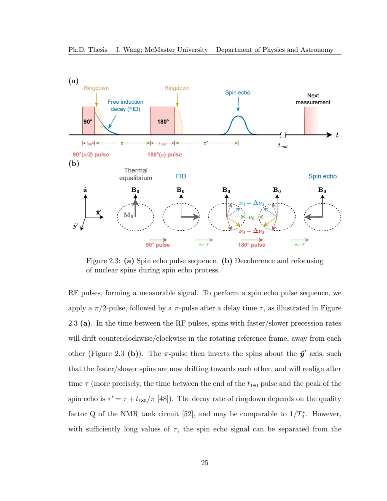
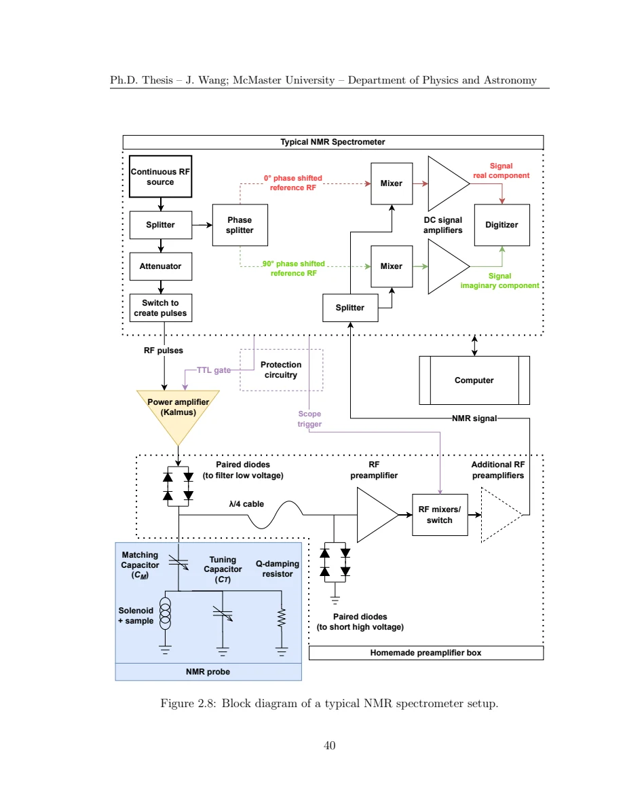

Wang · supplied source 2024 · chapter unit
2 · Translate the nuclear observables
Shift, quadrupole frequency, T₁ and T₂ constrain different properties and populations.
The question: Which spin response reaches the measured nuclei?
Before you start: the terms you need
- Quantum spin liquid candidate: a material tested against a quantum-disordered model; a null ordering signal is insufficient identification.
- K: local resonance shift, sensitive to a coupling-weighted static susceptibility.
- 1/T₁: recovery rate that samples fluctuations in the probe frequency window.
- ILT: constrained, regularized inference of a relaxation-rate distribution from recovery data.
- log-rate density: probability is the area in d log₁₀(1/T₁), not peak height.
See → explain → check
Follow the idea in 2 pictures.
Picture 1 / 2
Separate the channels
Look for: Uniform response and local dynamics do not have identical filters.
Swipe across the picture to read every label, or enlarge it below.
- Shift K
- Recovery 1/T₁
- Echo 1/T₂
A channel comparison, not measured spectra.
Read the coupling before the physical conclusion.
Check the original: Original PDF p. 34 · Original PDF p. 50
Picture 2 / 2
A timing window selects nuclei
Look for: Excitation and echo timing determine which signals are detectable.
Swipe across the picture to read every label, or enlarge it below.
- Invert / saturate
- Delay recovery
- Echo after finite τ
Spin-dependent transition kernels and acquisition windows must be specified.
Intensity fractions depend on preparation and readout.
Check the original: Original PDF p. 39 · Original PDF p. 40 · Original PDF p. 42 · Original PDF p. 47
Explain it back.
Try answering aloud before opening the explanation.
Why is T₂ relevant to a T₁ population estimate?
The recovery is read with an echo. A short T₂ can suppress an environment before its T₁ is analyzed.
Why does fluorine avoid this quadrupole complication?
Its nuclear spin is one-half, so the electric quadrupole moment does not create the splitting that complicates the larger-spin powder spectra.
Go deeper Follow the full argument
Static response and dynamic response
The Knight shift is a fractional change in resonance frequency from the reference, decomposed into a spin-dependent part and chemical/orbital contributions. Its connection to susceptibility uses hyperfine coupling and an explicit unit convention. A K-versus-χ plot can estimate coupling only when the compared temperature dependence has the assumed common origin. Defect contributions in a bulk susceptibility need not be represented by the line peak. Relaxation is different: 1/T₁ depends on fluctuating fields transverse to the quantization axis at the nuclear frequency, weighted over momentum by the hyperfine form factor. Thus a small shift and a small relaxation rate are complementary clues, not interchangeable measurements of a single magnetic quantity.
Original PDF p. 33 · Original PDF p. 34 · Original PDF p. 48 · Original PDF p. 49 · Original PDF p. 50
Read the pulse timing before assigning a fraction
A spin echo moves detection beyond ringdown and refocuses static dephasing, while finite T₂ still suppresses the echo amplitude. Longitudinal recovery requires waiting after inversion or saturation and comparing the signed signal with equilibrium. The source uses different preparation schemes for lithium, copper and fluorine; the kernel must correspond to the measured transitions. For the stated spin-three-halves Cu NQR convention, the exponential contains 3t/T₁ rather than t/T₁. This factor cannot be dropped during comparisons. Finite echo spacing and repetition time can preferentially remove faster-decaying or incompletely recovered nuclei, so measured intensity is not automatically proportional to the total chemical population.
Original PDF p. 38 · Original PDF p. 39 · Original PDF p. 40 · Original PDF p. 41 · Original PDF p. 42 · Original PDF p. 43 · Original PDF p. 47
Source typography and experimental controls
The introductory echo and inversion formulae on PDF pages 40–41 print positive exponent signs even though the discussion describes decay and return to equilibrium. The later working Eq. 2.5.2 on page 43 has the negative sign and is used here. The EFG ordering and NQR-frequency conventions on pages 45–46 also contain inconsistencies; the guide avoids teaching those printed equalities as definitive formulae. For the research logic, retain the supported distinction between quadrupole-sensitive nuclei and spin-one-half fluorine, the verified transition kernel, and the apparatus controls. Electronics, matching, phase cycling and receiver protection are explained as context for signal quality, not an instrument operating prescription.
Original PDF p. 40 · Original PDF p. 41 · Original PDF p. 43 · Original PDF p. 45 · Original PDF p. 46 · Original PDF p. 47 · Original PDF p. 51 · Original PDF p. 52 · Original PDF p. 53 · Original PDF p. 54
Translate the mathematics Essential equations and their meaning
M(t) = M₀[1 − λ e^(−qt/T₁)]
Symbols: λ: preparation factor; q=1 for the stated spin-½ recovery and q=3 for the stated Cu NQR recovery.
Use the transition-specific factor. The negative sign follows the working Eq. 2.5.2 and NQR Eq. 2.6.6.
1/T₁ ∝ Σq |A⊥(q)|² S(q,ω₀)
Symbols: A⊥: transverse hyperfine weights; S: spin-fluctuation spectrum; ω₀: resonance angular frequency.
Proportional form isolates the filtering logic; it is not a replacement for the source’s unit-specific prefactor.
Read the evidence Guided original source pages

Original PDF p. 39

Original PDF p. 54
What the evidence supports—and where it stops
- Do not reproduce the introductory printed sign/convention problems as validated physical formulae.
Source version, reading coverage and preservation
All substantive text in Chapters 1–7, the reprinted research article and numerical appendices read; original working kernels, equations and key result figures visually checked.
Reviewed body pages: 15, 16, 17, 18, 19, 20, 21, 22, 23, 24, 25, 26, 27, 28, 29, 30, 31, 32, 33, 34, 35, 36, 37, 38, 39, 40, 41, 42, 43, 44, 45, 46, 47, 48, 49, 50, 51, 52, 53, 54, 55, 56, 57, 58, 59, 60, 61, 62, 63, 64, 65, 66, 67, 68, 69, 70, 71, 72, 73, 74, 75, 76, 77, 78, 79, 80, 81, 82, 84, 85, 86, 87, 88, 89, 90, 91, 92, 93, 94, 95, 96, 97, 98, 99, 100, 101, 102, 103, 104, 105, 106, 107, 108, 109, 110, 111, 112, 113, 114, 115, 116, 117, 118, 119, 120, 121, 122, 123. Personal acknowledgements omitted from teaching content. Bibliographies and external supplements not independently re-read; only material actually present in the thesis is covered.
Source SHA-256: 80ad8aaad2ce3f48320bef046c30907939f8018990292aa5ebb7e5269d912da2. Original file bytes preserved locally; public scientific page images are rendered from that source.
Thesis - Wang - 2024 - Disordered spin liquids - NMR and inverse Laplace analysis.pdf